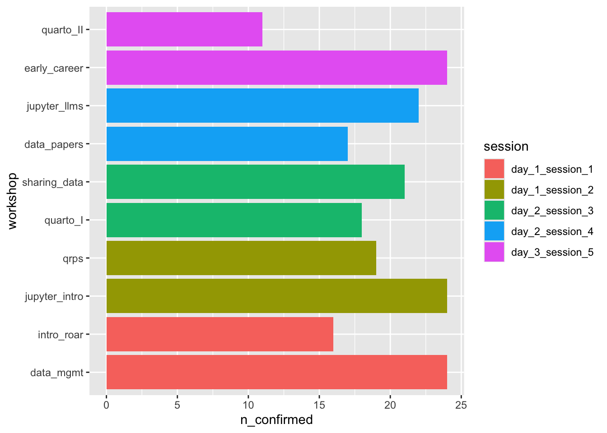

[1] "Timestamp"
[2] "Email Address"
[3] "What is your name?"
[4] "Which days of the bootcamp will you attend?"
[5] "Any meal/food restrictions?"
[6] "Workshop session 1 - Day 1 @ 1:45 pm"
[7] "Workshop session 2 - Day 1 @ 3:00 pm"
[8] "Workshop session 3 - Day 2 @ 1:15 pm"
[9] "Workshop session 4 - Day 2 @ 2:45 pm"
[10] "Workshop session 5 - Day 3 @ 10:45 1m"
[11] "attend_wed"
[12] "attend_thu"
[13] "attend_fri"
[14] "add_to_listserv"
[15] "added_to_listserv"
The imported CSV file has n=76 rows.
Note
The first row represents data generated by Rick Gilmore to test this workflow. We can delete that row, but only when there are >1 rows. The chunk below does not evaluate if there are fewer than 2 rows.
Code
if (dim(confirmations)[1] >1) { confirmations <- confirmations[2:dim(confirmations)[1],]} else {warning("Only one row in `confirmations; leaving data intact")}
We want to capture the “raw” or full question name and the short variable name in a data dictionary.
Code
confirmations_qs <-names(confirmations)confirmations_clean <- confirmations |> dplyr::rename(timestamp ="Timestamp",attend_days ="Which days of the bootcamp will you attend?",food_restrictions ="Any meal/food restrictions?",name ="What is your name?",psu_email ="Email Address",day_1_session_1 ="Workshop session 1 - Day 1 @ 1:45 pm",day_1_session_2 ="Workshop session 2 - Day 1 @ 3:00 pm",day_2_session_3 ="Workshop session 3 - Day 2 @ 1:15 pm",day_2_session_4 ="Workshop session 4 - Day 2 @ 2:45 pm",day_3_session_5 ="Workshop session 5 - Day 3 @ 10:45 1m" )confirmations_short <-c("timestamp","psu_email","name","attend_days","food_restrictions","day_1_session_1","day_1_session_2","day_2_session_3","day_2_session_4","day_3_session_5","attend_wed","attend_thu","attend_fri","add_to_listserv","added_to_listserv")confirmations_pid <-c(FALSE, FALSE, FALSE, TRUE, TRUE, FALSE, FALSE, FALSE, FALSE, FALSE, TRUE, TRUE, TRUE, TRUE, TRUE)confirmations_dd <-data.frame(qs = confirmations_qs, qs_short = confirmations_short, pid = confirmations_pid)confirmations_dd |> knitr::kable(format ='html')readr::write_csv(confirmations_dd,file =file.path(params$csv_dir,"confirmations-2025-data-dict.csv"))
Table 11.1: A minimal data dictionary.
qs
qs_short
pid
Timestamp
timestamp
FALSE
Email Address
psu_email
FALSE
What is your name?
name
FALSE
Which days of the bootcamp will you attend?
attend_days
TRUE
Any meal/food restrictions?
food_restrictions
TRUE
Workshop session 1 - Day 1 @ 1:45 pm
day_1_session_1
FALSE
Workshop session 2 - Day 1 @ 3:00 pm
day_1_session_2
FALSE
Workshop session 3 - Day 2 @ 1:15 pm
day_2_session_3
FALSE
Workshop session 4 - Day 2 @ 2:45 pm
day_2_session_4
FALSE
Workshop session 5 - Day 3 @ 10:45 1m
day_3_session_5
FALSE
attend_wed
attend_wed
TRUE
attend_thu
attend_thu
TRUE
attend_fri
attend_fri
TRUE
add_to_listserv
add_to_listserv
TRUE
added_to_listserv
added_to_listserv
TRUE
Then, we want to shorten the responses (e.g., day_n_session_m) for easier visualization.
Code
confirmations_clean <- confirmations_clean |>mutate(day_1_session_1 =case_match( day_1_session_1,"Harnessing advanced cyberinfrastructure for research: An introduction to Roar and ICDS resources"~"intro_roar","Getting credit for sharing your data (Part I): Good enough data management practices"~"data_mgmt" ) ) |>mutate(day_1_session_2 =case_match( day_1_session_2,"Getting Started with Python in JupyterLab: A Hands-On Introduction"~"jupyter_intro","Questionable research practices"~"qrps" ) ) |>mutate(day_2_session_3 =case_match( day_2_session_3,"Quarto (Part I): A tool for open scholarship"~"quarto_I","Getting credit (Part II): Sharing your data"~"sharing_data" ) ) |>mutate(day_2_session_4 =case_match( day_2_session_4,"Getting credit (Part III): Data papers"~"data_papers","LLMs with Jupyter notebooks"~"jupyter_llms" ) ) |>mutate(day_3_session_5 =case_match( day_3_session_5,"Where to start? Early career panel"~"early_career","Quarto (Part II): Reproducible research reports"~"quarto_II" ) )
Create separate variables by attendance day.
Code
confirmations_clean <- confirmations_clean |>mutate(plan_wed = stringr::str_detect(attend_days, "Wed"),plan_thu = stringr::str_detect(attend_days, "Thu"),plan_fri = stringr::str_detect(attend_days, "Fri"),withdrew = stringr::str_detect(attend_days, "I can no"))
Some people (n=20) had to cancel and let us know via the confirmation form. This means our expected number of confirmed non-presenter attendees is n=50.
We will transform the data frame to make it easier to summarize the number of confirmations per session and topic.
Code
confirmations_long <- no_cancel |># Remove individual-level variables since this is a summaryselect(-c('timestamp', 'psu_email', 'name', 'attend_days','food_restrictions', 'plan_wed', 'plan_thu', 'plan_fri')) |>pivot_longer(cols =c('day_1_session_1','day_1_session_2','day_2_session_3','day_2_session_4','day_3_session_5' ),names_to ='session',values_to ='workshop' ) |>add_count(session, workshop, name ="n_confirmed", sort =TRUE) |>group_by(session, workshop) |>filter(!is.na(workshop)) |>distinct()
Code
confirmations_long |>distinct(workshop, n_confirmed) |>mutate(workshop =fct_reorder(workshop, n_confirmed)) |>ggplot() +aes(x = workshop, y = n_confirmed, fill = session) +geom_col() +coord_flip()

Figure 11.1: Interest in specific workshops by session.
Attendance by day
Of the n=70 of people who confirmed, n=20 cancelled or withdrew.
We had n=16 non-presenters and n=10 presenters attend.
Source Code
---title: Confirmationcode-fold: trueparams: csv_dir: "include/csv" sheets_fn: "Open Scholarship Bootcamp 2025: Confirmation (Responses)" data_csv_fn: "confirmations-2025.csv" not_testing: false---## AboutThis page documents the workflow for downloading, cleaning, and visualizing the Bootcamp attendance confirmation data.## SetupWe load some packages into memory for convenience.```{r}#| label: load-packagessuppressPackageStartupMessages(library('tidyverse'))suppressPackageStartupMessages(library('ggplot2'))suppressPackageStartupMessages(library('dplyr'))suppressPackageStartupMessages(library('tidyr'))suppressPackageStartupMessages(library('stringr'))suppressPackageStartupMessages(library('lubridate'))```## ImportThe Google Form generates a Google Sheet that we download to a protected directory (`include/csv`) that is *not* synched to GitHub.::: {.callout-important}This is because the sheet contains personally identifying information.:::```{r}#| label: import-data#| message: false#| if (!dir.exists(params$csv_dir)) {message("Creating missing `include/csv/`.")dir.create(params$csv_dir)}options(gargle_oauth_email =Sys.getenv("GMAIL_SURVEY"))googledrive::drive_auth()# googledrive::drive_download(# params$sheets_fn,# path = file.path(params$csv_dir, params$data_csv_fn),# type = "csv",# overwrite = TRUE# )attendees <- googlesheets4::read_sheet("https://docs.google.com/spreadsheets/d/1PB4VlZ3hSblOIC9DpOuN6n7icEPjrhQEQZsCl-WAdEI/edit?gid=1355452782#gid=1355452782") |> readr::write_csv(file.path(params$csv_dir, params$data_csv_fn))presenters <- googlesheets4::read_sheet("https://docs.google.com/spreadsheets/d/1PB4VlZ3hSblOIC9DpOuN6n7icEPjrhQEQZsCl-WAdEI/edit?gid=1095246661#gid=1095246661", sheet ="presenters") |> readr::write_csv(file.path(params$csv_dir, "presenters-2025.csv"))```## CleanWe reimport the saved CSV file and then clean it.```{r}confirmations <- readr::read_csv(file.path(params$csv_dir, params$data_csv_fn),show_col_types =FALSE)names(confirmations)```The imported CSV file has *n*=`r dim(confirmations)[1]` rows.::: {.callout-note}The first row represents data generated by Rick Gilmore to test this workflow.We can delete that row, but only when there are >1 rows.The chunk below *does not evaluate* if there are fewer than 2 rows.```{r}#| label: remove-test-row#| eval: falseif (dim(confirmations)[1] >1) { confirmations <- confirmations[2:dim(confirmations)[1],]} else {warning("Only one row in `confirmations; leaving data intact")}```:::We want to capture the "raw" or full question name and the short variable name in a data dictionary.```{r}#| label: tbl-data-dictionary#| tbl-cap: "A minimal data dictionary."confirmations_qs <-names(confirmations)confirmations_clean <- confirmations |> dplyr::rename(timestamp ="Timestamp",attend_days ="Which days of the bootcamp will you attend?",food_restrictions ="Any meal/food restrictions?",name ="What is your name?",psu_email ="Email Address",day_1_session_1 ="Workshop session 1 - Day 1 @ 1:45 pm",day_1_session_2 ="Workshop session 2 - Day 1 @ 3:00 pm",day_2_session_3 ="Workshop session 3 - Day 2 @ 1:15 pm",day_2_session_4 ="Workshop session 4 - Day 2 @ 2:45 pm",day_3_session_5 ="Workshop session 5 - Day 3 @ 10:45 1m" )confirmations_short <-c("timestamp","psu_email","name","attend_days","food_restrictions","day_1_session_1","day_1_session_2","day_2_session_3","day_2_session_4","day_3_session_5","attend_wed","attend_thu","attend_fri","add_to_listserv","added_to_listserv")confirmations_pid <-c(FALSE, FALSE, FALSE, TRUE, TRUE, FALSE, FALSE, FALSE, FALSE, FALSE, TRUE, TRUE, TRUE, TRUE, TRUE)confirmations_dd <-data.frame(qs = confirmations_qs, qs_short = confirmations_short, pid = confirmations_pid)confirmations_dd |> knitr::kable(format ='html')readr::write_csv(confirmations_dd,file =file.path(params$csv_dir,"confirmations-2025-data-dict.csv"))```Then, we want to shorten the responses (e.g., `day_n_session_m`) for easier visualization.```{r}#| label: clean-responsesconfirmations_clean <- confirmations_clean |>mutate(day_1_session_1 =case_match( day_1_session_1,"Harnessing advanced cyberinfrastructure for research: An introduction to Roar and ICDS resources"~"intro_roar","Getting credit for sharing your data (Part I): Good enough data management practices"~"data_mgmt" ) ) |>mutate(day_1_session_2 =case_match( day_1_session_2,"Getting Started with Python in JupyterLab: A Hands-On Introduction"~"jupyter_intro","Questionable research practices"~"qrps" ) ) |>mutate(day_2_session_3 =case_match( day_2_session_3,"Quarto (Part I): A tool for open scholarship"~"quarto_I","Getting credit (Part II): Sharing your data"~"sharing_data" ) ) |>mutate(day_2_session_4 =case_match( day_2_session_4,"Getting credit (Part III): Data papers"~"data_papers","LLMs with Jupyter notebooks"~"jupyter_llms" ) ) |>mutate(day_3_session_5 =case_match( day_3_session_5,"Where to start? Early career panel"~"early_career","Quarto (Part II): Reproducible research reports"~"quarto_II" ) )```Create separate variables by attendance day.```{r}confirmations_clean <- confirmations_clean |>mutate(plan_wed = stringr::str_detect(attend_days, "Wed"),plan_thu = stringr::str_detect(attend_days, "Thu"),plan_fri = stringr::str_detect(attend_days, "Fri"),withdrew = stringr::str_detect(attend_days, "I can no")) ```Remove duplicate (email) entries.```{r}confirmations_clean <- confirmations_clean |>distinct(psu_email, .keep_all =TRUE)```It's a good idea to save the cleaned file.```{r}readr::write_csv(confirmations_clean, file =file.path(params$csv_dir, paste0(str_remove(params$data_csv_fn, ".csv"),"-clean.csv")))```## VisualizeWe had *n*=`r dim(confirmations_clean)[1]` responde to our confirmation survey.```{r}cancelled <- confirmations_clean |>filter(withdrew ==TRUE)no_cancel <- confirmations_clean |>filter(withdrew %in%c(NA, FALSE))```Some people (*n*=`r dim(cancelled)[1]`) had to cancel and let us know via the confirmation form. This means our expected number of confirmed non-presenter attendees is *n*=`r dim(no_cancel)[1]`.We will transform the data frame to make it easier to summarize the number of confirmations per session and topic.```{r}confirmations_long <- no_cancel |># Remove individual-level variables since this is a summaryselect(-c('timestamp', 'psu_email', 'name', 'attend_days','food_restrictions', 'plan_wed', 'plan_thu', 'plan_fri')) |>pivot_longer(cols =c('day_1_session_1','day_1_session_2','day_2_session_3','day_2_session_4','day_3_session_5' ),names_to ='session',values_to ='workshop' ) |>add_count(session, workshop, name ="n_confirmed", sort =TRUE) |>group_by(session, workshop) |>filter(!is.na(workshop)) |>distinct()``````{r}#| label: fig-workshop-interest#| fig-cap: "Interest in specific workshops by session."confirmations_long |>distinct(workshop, n_confirmed) |>mutate(workshop =fct_reorder(workshop, n_confirmed)) |>ggplot() +aes(x = workshop, y = n_confirmed, fill = session) +geom_col() +coord_flip()```## Attendance by dayOf the *n*=`r dim(confirmations_clean)[1]` of people who confirmed, *n*=`r dim(cancelled)[1]` cancelled or withdrew.### Day 1```{r}wed_attendees <- no_cancel |>filter(attend_wed =='yes')wed_xtabs <-xtabs(formula =~ attend_wed + plan_wed, data = wed_attendees)wed_presenters <- presenters |>filter(attend_wed =="presenter")```We had *n*=`r dim(wed_attendees)[1]` non-presenters and *n*=`r dim(wed_presenters)[1]` presenters attend.### Day 2```{r}thu_attendees <- no_cancel |>filter(attend_thu =='yes')thu_xtabs <-xtabs(formula =~ attend_thu + plan_thu, data = thu_attendees)thu_presenters <- presenters |>filter(attend_thu =="presenter")```We had *n*=`r dim(thu_attendees)[1]` non-presenters and *n*=`r dim(thu_presenters)[1]` presenters attend.### Day 3```{r}fri_attendees <- no_cancel |>filter(attend_fri =='yes')fri_xtabs <-xtabs(formula =~ attend_fri + plan_fri, data = fri_attendees)fri_presenters <- presenters |>filter(attend_fri =="presenter")```We had *n*=`r dim(fri_attendees)[1]` non-presenters and *n*=`r dim(fri_presenters)[1]` presenters attend.